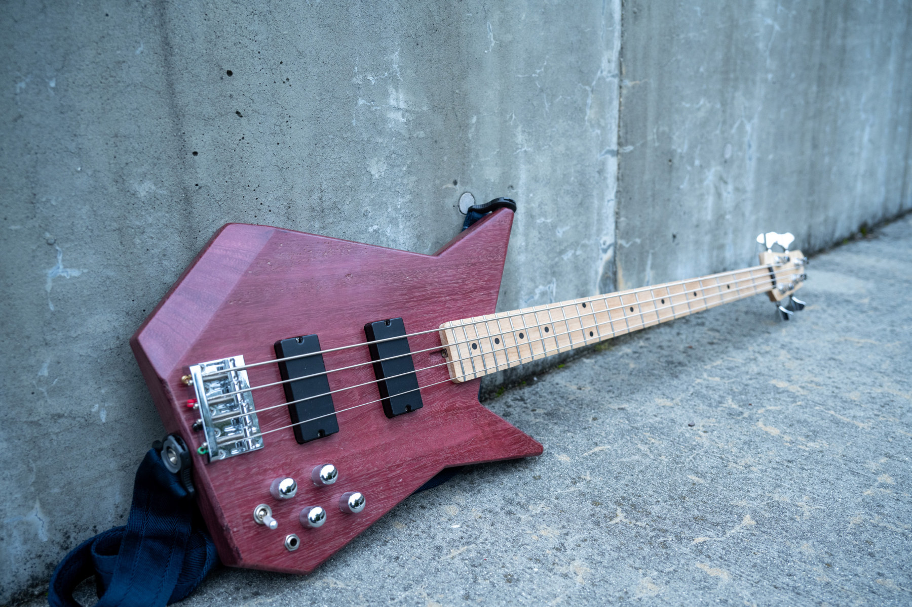
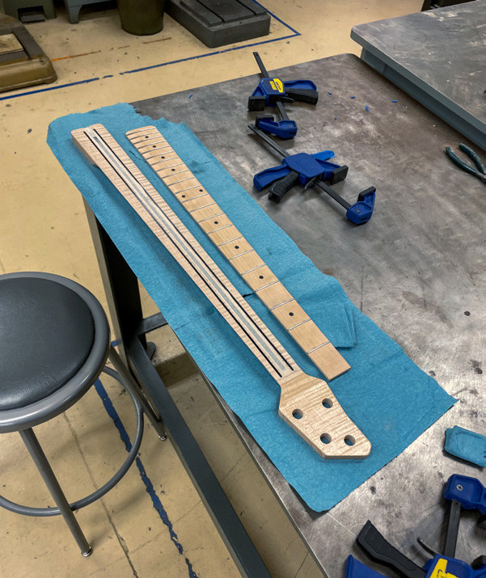
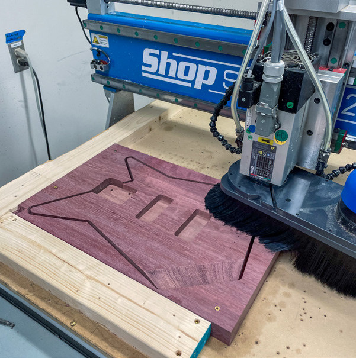
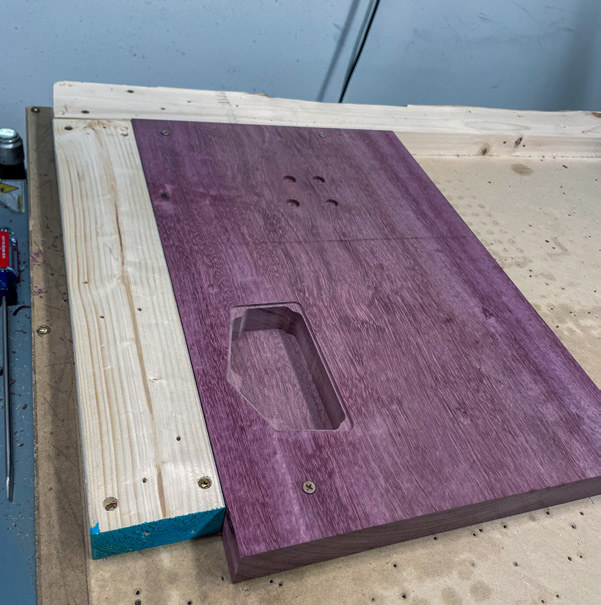
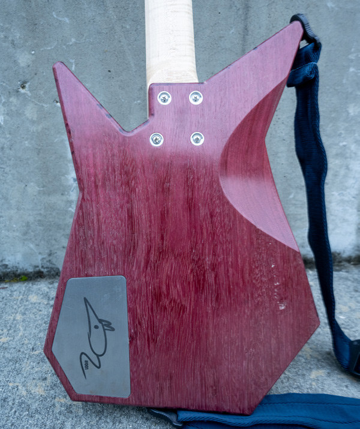

Heartline.
An electric bass built around expressive materials, a distinctive silhouette, and the details that make it feel right.

- Timeframe
- 6 months
- My role
- Instrument design, CAD/CAM, machining & assembly
- Materials & technology
- Purpleheart · Flame maple · Stainless steel
Built for
the stage.
With Heartline, I wanted to move beyond familiar bass silhouettes and create an instrument that stands out while remaining effortless to play. It needed to look at home in a showroom or on the stage of a punk show.
Durability guided the details: passive electronics with twin soapbar humbuckers, stainless steel frets, a solid body, and a carbon-reinforced quartersawn neck. A laser-engraved stainless steel control-cavity cover is held in place by magnets.
Let the
materials speak.
The purpleheart body is paired with a flame maple neck and maple fretboard, with a small purpleheart detail supporting the nut. A French polish on the body and an oil finish on the neck bring out the wood’s natural character.
I moved from paper sketches into Fusion 360, then developed the CAM to machine the body, neck, and fretboard on Slugworks’ ShopSabre23 CNC router. A test body in inexpensive wood helped verify the dimensions before machining purpleheart.
Precision meets
persistence.
The tapering neck profile made both CAD and machining demanding. Tool selection, feeds and speeds, and workholding took much of the project’s time. The dense purpleheart broke bits and sheared screws during machining and assembly.
Carbon-rod channels required machining both sides of a long neck while maintaining alignment; my first test neck ended up crooked. Brass inserts reinforced the neck-to-body connection, and the stainless steel frets took careful setting and leveling.
An early metal-pickguard idea was dropped after discussing the design with a friend experienced in high-end instruments. Each revision helped focus the instrument on its materials, comfort, and longevity.




Heartline
After machining, assembly, soldering, and finishing, Heartline came together as a balanced instrument without neck dive—one whose visual character comes directly from its materials and construction.